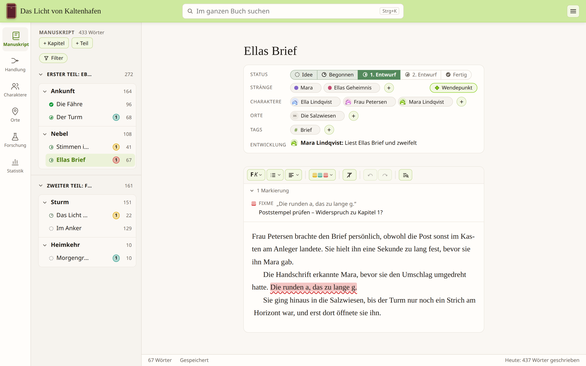

Schreiben
Ein Manuskript, das mitwächst
Gliedere dein Buch in Teile, Kapitel und Szenen und ordne alles per Drag & Drop um. Der Editor bleibt ruhig und lesbar – mit typografischen Anführungszeichen, Silbentrennung und einer Wortzahl für jede Szene.
- Szenenstatus von Idee über Entwurf bis Fertig – als farbiger Punkt im Baum
- Charaktere, Orte, Tags und Handlungsstränge direkt an der Szene
- Filter nach Status, Strang, Figur, Ort oder offenen Markierungen
- Papierkorb für gelöschte Szenen, Kapitel und Notizen
